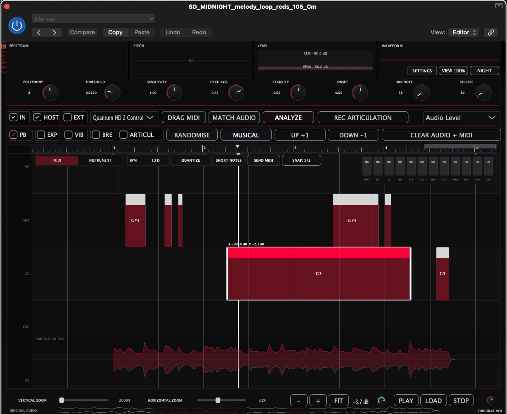
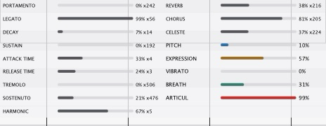
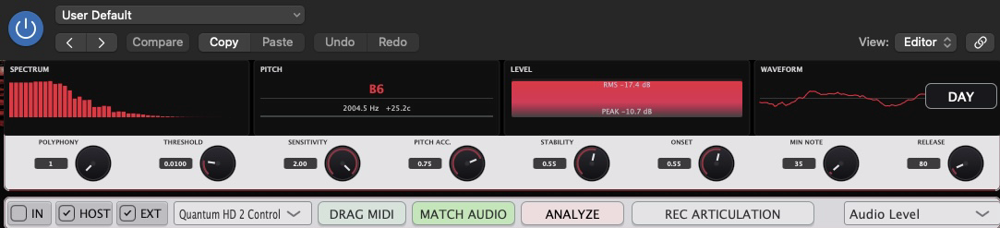
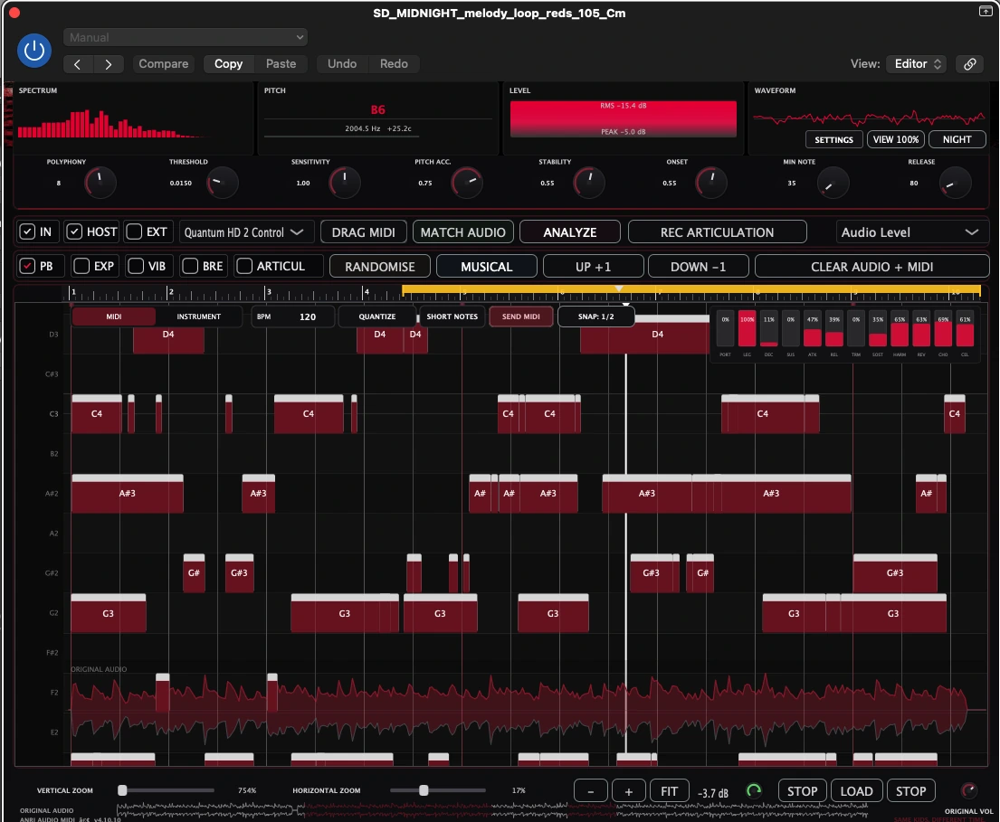
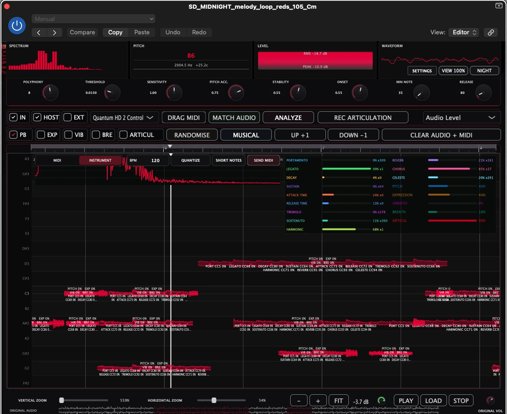

ANALYZE
Анализ аудиоматериала и формирование MIDI-нот для дальнейшей работы.
ANRI AUDIO MIDI преобразует аудиозаписи в MIDI-ноты. Просматривайте и редактируйте результат в Piano Roll, переносите MIDI в DAW. Для Logic Pro доступен macOS AUv2, для Windows x64 — отдельный VST3.

Плагин помогает работать с музыкальными фразами и MIDI непосредственно в рабочем процессе музыкального производства.
Анализ аудиоматериала и формирование MIDI-нот для дальнейшей работы.
Наглядное редактирование высоты, начала и длительности нот рядом с исходной волной.
Перемещение и изменение нот, корректировка velocity и другие инструменты редактирования.
Согласование динамики MIDI с громкостью исходного исполнения для более естественных значений velocity.
Корректировка ритмической сетки и точная настройка расположения событий.
Предварительное прослушивание и проверка результата до переноса MIDI в проект. Масштабирование помогает детально проверить фразу и положение нот.
Перенос MIDI и передача подготовленных нот в рабочий процесс Logic Pro.
Выбор MIDI-канала, вывод через хост или внешний MIDI, транспонирование и диапазон нот.
Randomise, Musical, Up +1 и Down -1 для быстрых музыкальных вариаций.
Параметры Legato, Tremolo, Pitch, Expression, Vibrato, Breath и Articul рядом с MIDI.
Регулируйте параметры определения нот под исходное аудио.
Не только высота и длительность нот: ANRI AUDIO MIDI показывает характеристики артикуляции и выразительности исходного исполнения рядом с подготовленными MIDI-данными.
Перед переносом MIDI в Logic Pro можно изучить характер исходной фразы — от Legato и Portamento до Vibrato, Expression и других параметров. Все показатели собраны в одной наглядной панели.


Настоящий интерфейс ANRI AUDIO MIDI в Logic Pro: MIDI-ноты, исходная звуковая волна, артикуляции и инструменты точного редактирования в Piano Roll.


Версия для macOS в формате Audio Unit (AUv2) для Logic Pro бесплатна. Покупка, регистрация аккаунта, лицензионный ключ и активация не требуются.
Без оплаты и подписки.
Для работы в Logic Pro.
Поддержка ничего не разблокирует.
macOS: Audio Unit (AUv2) для Logic Pro. Windows VST3: доступен отдельный установщик RC2.1 для Windows x64 VST3.
Откройте скачанный .pkg через Finder. Если macOS заблокирует его, используйте «Системные настройки → Конфиденциальность и безопасность → Всё равно открыть». Не отключайте защиту macOS. Покупка, аккаунт, лицензионный ключ и активация не требуются.
Это отдельная Windows-версия, без macOS Broker и SEND MIDI. Установщик не подписан сертификатом издателя: Windows может показать предупреждение SmartScreen. Перед запуском проверьте SHA-256.
SHA-256: 6BD2AABF39505DC753EF573D43E1D4D9FA95B95EA7C0A2A4FBD3A6548A00D39C
ANRI AUDIO MIDI распространяется бесплатно. Если программа вам полезна, вы можете добровольно поддержать независимую разработку. Поддержка не требуется для скачивания, установки или использования плагина и ничего не разблокирует.
Для добровольной поддержки доступны Kaspi Pay, Boosty и PayPal. Ссылка ProEducation готовится отдельно.
По вопросам установки, совместимости и сообщениям об ошибках пишите в Telegram: @anriproduct.
Не отправляйте по Telegram данные банковских карт, пароли и личные учётные данные.
ANRI AUDIO MIDI — независимый проект ANRI AUDIO, разработанный в Казахстане.
Платформа: macOS Audio Unit (AUv2) для Logic Pro.
Windows: VST3 для Windows x64 доступен отдельной версией RC2.1.
Контакт: @anriproduct
Да. Плагин можно скачивать и использовать бесплатно.
Нет. Плагин не требует ключа, аккаунта или активации.
Да. Для Windows x64 доступен отдельный автономный установщик VST3 RC2.1. macOS AUv2 для Logic Pro скачивается отдельно.
Нет. Поддержка полностью добровольна и не меняет возможности плагина.
macOS PKG не подписан Developer ID и не нотариализован. Windows EXE не имеет цифровой подписи издателя, поэтому возможно предупреждение SmartScreen.
Напишите на @anriproduct.